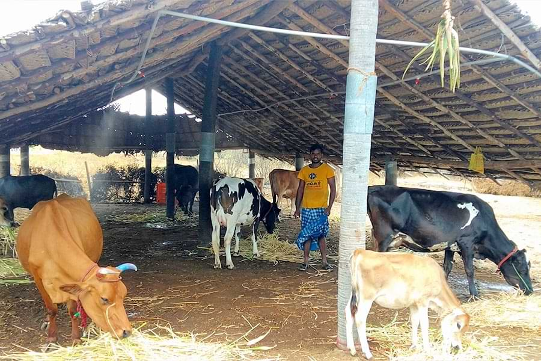

3. Livestock Management
Under NICRA scheme, the following successful interventions were made from 2011 to 2020 under livestock module.
- Improved sheds
- Green fodder cultivation
- Disease preventive measures
I. Improved Sheds

Most of the farmers were of small holders and they did not have proper sheds for livestock and the animals were tied in open space under tree shades/other shades before implementing the scheme. Hence the animals were susceptible for heat stress, prone to vector borne diseases and the production performance of the animals was also low.
- Under NICRA, 5 improved sheds for dairy animals, 17 sheds for sheep, 5 slatted floor shed, 66 night shelters for poultry birds were introduced
Impact:
Dairy Animals
- Incidence of silent heat was reduced (20% to 10%)
- Conception rate was improved (AI / conception was reduced from 3% to 2%)
- Onset of postpartum oestrous was earlier (From 90 days to 60 days)
- Enhanced daily milk production by 300-500 ml in dairy animals
Small Ruminants
- Kidding / Lambing interval was reduced from 10 months to 8 months
- Average birth weight of kid was improved from 1.5 to 1.75 kg
- Mortality was reduced from 10% - 20% to 1% - 3% in calves, lamb, and kids
- Average daily body weight gain was increased from 40 gm to 75 gm
- Weight at marketable age (6 months) was increased from 9 to 12 kg
- Disease incidence reduced from 10% to 5%
Poultry
- Body weight of 1.5 kg was obtained at 4 months against 6 months of age
- Clutch size increased from 12% to 15%
- Chick mortality was reduced to 2% - 3% from 10% - 20%
II. Green Fodder Cultivation
- Introduced perennial drought tolerant green fodder sorghum COFS 29 & 31
- Annual milk production in the village increased from 177702 litre to 781429 litre
- Green fodder production increased in 78 ha of farmer's field
- Dairy population increased from 368 nos. to 922 nos.
- Productivity increased from 4.9 litre to 7.2 litre per animal
- 380 farmers (NICRA & Nearby Village) adopted to cultivate COFS 29 & 31 in 92 ha
III. Disease Preventive Measures Undertaken
Animal health camps conducted regularly and the following disease preventive measures were undertaken
- Deworming of young ones, needy animals and birds
- Vaccination against FMD in cattle, PPR in goat, Blue tongue in sheep and RDVK in poultry
- Treatment of disease affected animals
Calves, Lamb & Kids mortality was reduced to 1-3% due to regular health care services. Now the farmers are regularly following vaccination and deworming for their animals by their own effort helps to prevent the disease outbreak, decrease the treatment cost and increase the profitability of the small holder farmers.
Back